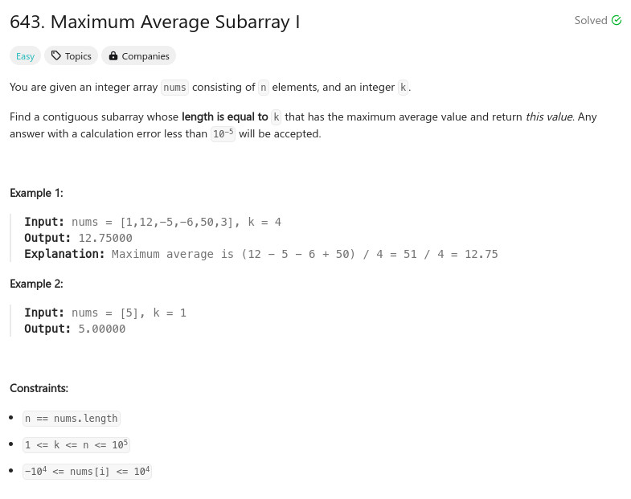

參考資訊：
https://www.cnblogs.com/cnoodle/p/14375730.html
題目：

double findMaxAverage(int* nums, int numsSize, int k)
{
int cc = 0;
double r = -INFINITY;
double sum = 0;
for (cc = 0; cc < numsSize; cc++) {
sum += nums[cc];
if (cc >= (k - 1)) {
if (sum > r) {
r = sum;
}
sum -= nums[cc - (k - 1)];
}
}
return r / k;
}